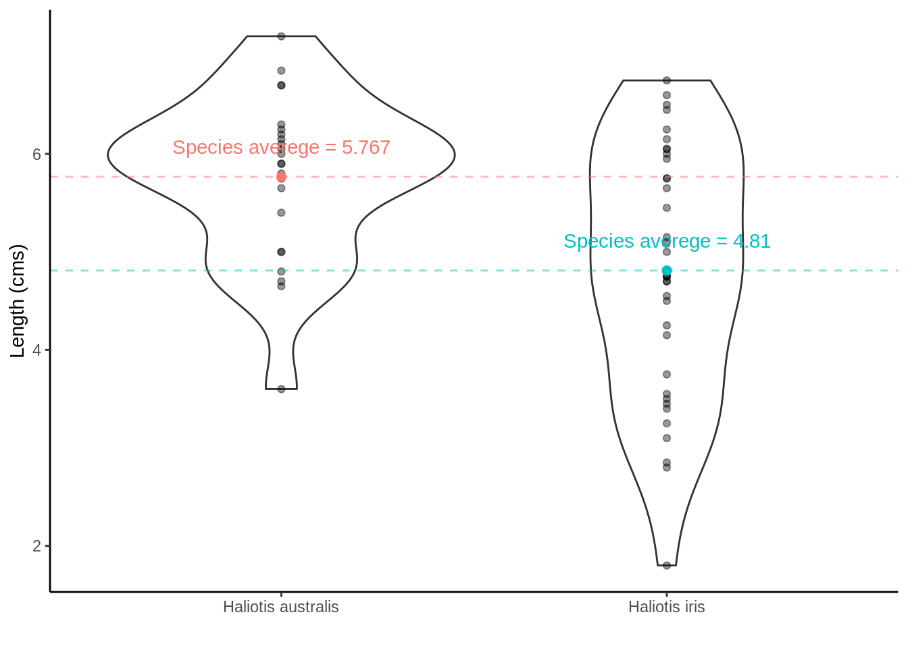
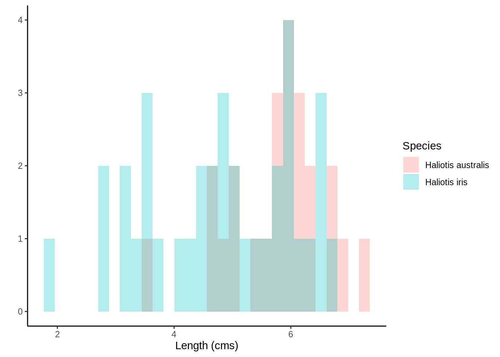
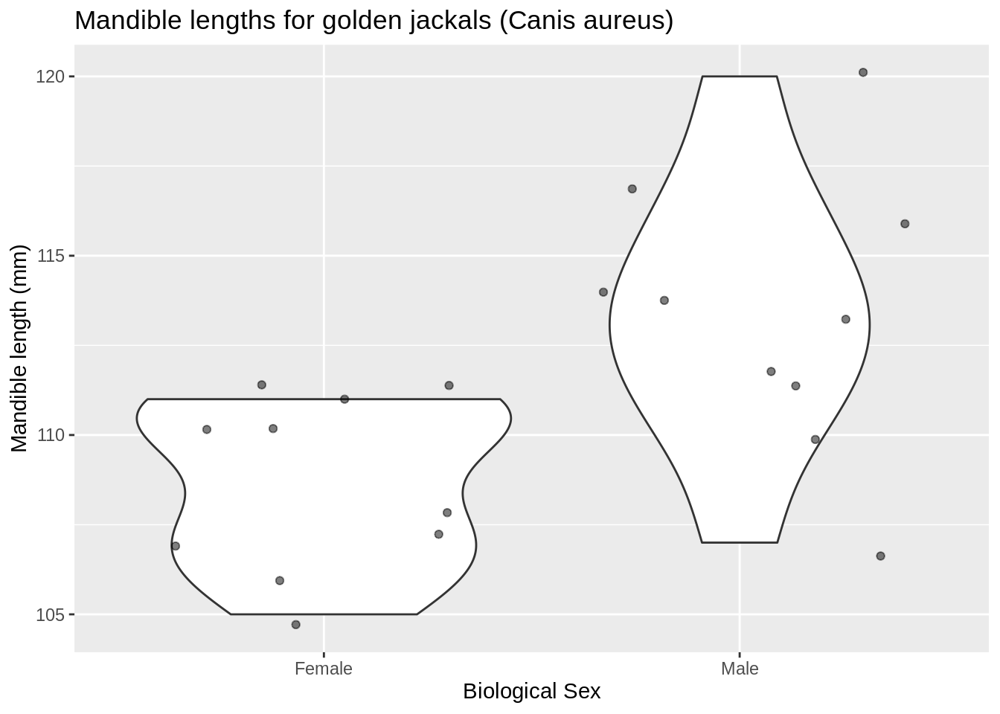
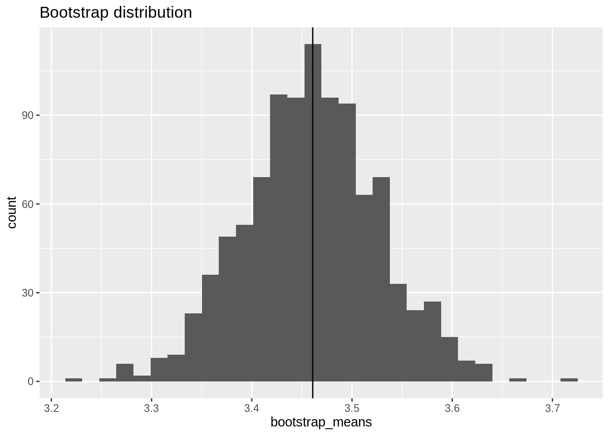

11 Resampling Procedures
11.1 Learning Objectives
- List the aims, write out the appropriate null and alternative hypothesis using statistical notation for, and write
Rcode to carry out a- permutation (randomization) test
- bootsrap procedure
11.2 Resampling
What is resampling?
Any of a variety of methods for doing one of the following
- Estimating the precision of sample statistics (e.g., bootstrapping)
- Performing significance tests (e.g., permutation/exact/randomisation tests)
- Validating models (e.g., bootstrapping, cross validation)
11.2.1 Significance tests
A significance test can tell us whether an observed effect (e.g., difference between two means (or medians), or correlation between two variables) could occur by chance in selecting a random sample from each of the two populations.
The basic approach to permutation tests is straightforward:
- Choose a statistic to measure the effect in question (e.g., differences between group means)
- Calculate that test statistic on the observed data. Note this metric can be anything you wish
- Construct the sampling distribution that this statistic would have if the effect were not present in the population (i.e., the distribution under the Null hypothesis, \(H_0\)): For chosen number of times
- shuffle the data labels
- calculate the test statistic for the reshuffled data and retain
- Find the location of your observed statistic in the sampling distribution. The location of observed statistic in sampling distribution is informative:
- if in the main body of the distribution then the observed statistic could easily have occurred by chance
- if in the tail of the distribution then the observed statistic would rarely occur by chance and there is evidence that something other than chance is operating.
- Calculate the proportion of times your reshuffled statistics equal or exceed the observed. This p-value is the probability that we observe a statistic at least as “extreme” as the one we observed State the strength of evidence against the null on the basis of this probability.
11.3 Significance testing using permutation (randomisation) tests
11.3.1 Permutation Test on Two Independent Samples
11.3.1.1 Pāua shell lengths
Remember the Pāua data from Chapter 1 One question we may want to ask is if on average the shell length differs between Species?
Scientific question: Are the shell lengths of shells the same in both species? Null hypothesis: The distribution of shell lengths in Haliotis iris the same as in Haliotis australis Test statistic: Difference of sample means
means <- paua %>% group_by(Species) %>% summarise(means = mean(Length))
ggplot(paua,aes(x = Species, y = Length)) +
geom_violin() +
geom_point(alpha = 0.4) +
ylab("Length (cms)") + xlab("") +
theme_classic() +
geom_point(data = means, aes(x = Species, y = means, color = Species), size = 2) +
geom_hline(data = means, aes(yintercept = means, color = Species), lty = 2, alpha = 0.5) +
theme(legend.position = "none") +
geom_text(data = means, aes(x = Species, y = means + 0.3, label = paste0("Species averege = ",round(means,3)), color = Species))
ggplot(paua,aes(x = Length, fill = Species)) +
geom_histogram(position = "identity", alpha = 0.3) +
xlab("Length (cms)") + ylab("") +
theme_classic()## `stat_bin()` using `bins = 30`. Pick better value with `binwidth`.
But because the data are skewed and we've likely got non-constant variances we may be better off adopting a randomization test, rather than a parametric t-test
## observed differences in means
diff_in_means <- (paua %>% group_by(Species) %>%
summarise(mean = mean(Length)) %>%
summarise(diff = diff(mean)))$diff
diff_in_means## [1] -0.9569444## Number of times I want to randomise
nreps <- 1000
## initialize empty array to hold results
randomisation_difference_mean <- numeric(nreps)
set.seed(1234) ## *****Remove this line for actual analyses*****
## This means that each run with produce the same results and
## agree with the printout that I show.
for (i in 1:nreps) {
## the observations
data <- data.frame(value = paua$Length)
## randomise labels
data$random_labels <-sample(paua$Species, replace = FALSE)
## randomised differences in mean
randomisation_difference_mean[i] <- (data %>% group_by(random_labels) %>% summarise(mean = mean(value)) %>% summarise(diff = diff(mean)))$diff
}
## results
results <- data.frame(randomisation_difference_mean = randomisation_difference_mean)## How many randomised differences in means are as least as extreme as the one we observed
## absolute value as dealing with two tailed
n_exceed <- sum(abs(results$randomisation_difference_mean) >= abs(diff_in_means))
n_exceed## [1] 1## proportion
n_exceed/nreps## [1] 0.001ggplot(results, aes(x = randomisation_difference_mean)) +
geom_histogram() +
theme_classic() + ylab("") + xlab("Differences between randomised group means") +
geom_vline(xintercept = diff_in_means, col = "cyan4", size = 1,alpha = 0.6) +
annotate(geom = 'text', label = "Observed difference between means" ,
x = -Inf, y = Inf, hjust = 0, vjust = 1.5, color = "cyan4")## `stat_bin()` using `bins = 30`. Pick better value with `binwidth`.
How would the parametric t-test have served?
t.test(Length ~ Species, data = paua)##
## Welch Two Sample t-test
##
## data: Length by Species
## t = 3.5404, df = 57.955, p-value = 0.0007957
## alternative hypothesis: true difference in means is not equal to 0
## 95 percent confidence interval:
## 0.4158802 1.4980086
## sample estimates:
## mean in group Haliotis australis mean in group Haliotis iris
## 5.766667 4.809722Not too different after all
11.3.1.2 Jackal mandible lengths
## Mandible lengths (mm) for golden jackals (Canis aureus) of each sex from the British Museum
jackal <- data.frame(mandible_length_mm = c(120, 107, 110, 116, 114, 111, 113, 117, 114, 112,
110, 111, 107, 108, 110, 105, 107, 106, 111, 111),
sex = rep(c("Male","Female"), each = 10))Scientific question: Are the jaw lengths of jackals the same in both sexes? Null hypothesis: The distribution of jaw lengths in male jackals the same as in in females Test statistic: Difference of sample means

Rather than a for loop let's try this another way.
## observed statistic
jackal_mean_diff <- (jackal %>%
group_by(sex) %>%
summarise(mean = mean(mandible_length_mm)) %>%
summarise(diff = diff(mean)))$diff
## Generate all possible combinations
## This time we're doing ALL possble ones
## rather than a rendom 1000
combinations <- combn(20,10)
## Do the permutations
permtest_combinations <- apply(combinations, 2, function(x)
mean(jackal$mandible_length_mm[x]) - mean(jackal$mandible_length_mm[-x]))
## Full Permutation test p.value
length(permtest_combinations[abs(permtest_combinations) >= jackal_mean_diff]) / choose(20,10)## [1] 0.003334127## Now let's use 10000 random permutations, sample without replacement
## set up matrix
random_perm <- apply(matrix(0, nrow = 10000, ncol = 1), 1, function(x) sample(20))
random_mean_diff <- apply(random_perm, 2, function(x){
z <- jackal$mandible_length_mm[x]
mean(z[jackal$sex == "Male"]) - mean(z[jackal$sex == "Female"])
})
random_p.value <- length(random_mean_diff [abs(random_mean_diff) >= jackal_mean_diff]) / 10000 ## note the abs()
random_p.value## [1] 0.0029## Now what about a t-test (two-sample)
t.test(mandible_length_mm ~ sex, data = jackal)$p.value## [1] 0.00335995211.3.2 P-values from permutation tests
- In experimental situations a large p-value (large tail proportion) means that the luck of the randomisation quite often produces group differences as large or even larger than what we've got in our data.
- A small p-value means that the luck of the randomisation draw hardly ever produces group differences as large as we've got in our data.
- Statistical significance does not imply practical significance.
- Statistical significance says nothing about the size of treatment differences. To estimate the sizes of differences you need confidence intervals.
NOTE: We can extend the randomization test to make inference about any sample statistic (not just the mean)
11.4 The bootstrap
Recall that the sampling distribution shows us what would happen if we took very many samples under the same conditions. The bootstrap is a procedure for finding the (approximate) sampling distribution from just one sample.
In brief,
- The original sample represents the distribution of the population from which it was drawn.
- Resamples, taken with replacement from the original sample are representative of what we would get from drawing many samples from the population (the distribution of the statistics calculated from each resample is known as the bootstrap distribution of the statistic).
- The bootstrap distribution of a statistic represents that statistic’s sampling distribution.
11.4.1 Example: constructing bootstrap confidence intervals
Old faithful is a gyser located in Yellowstone National Park, Wyoming. Below is a histogram of the durations of 299 consecutive eruptions. Clearly bimodal!
MASS::geyser## waiting duration
## 1 80 4.0166667
## 2 71 2.1500000
## 3 57 4.0000000
## 4 80 4.0000000
## 5 75 4.0000000
## 6 77 2.0000000
## 7 60 4.3833333
## 8 86 4.2833333
## 9 77 2.0333333
## 10 56 4.8333333
## 11 81 1.8333333
## 12 50 5.4500000
## 13 89 1.6166667
## 14 54 4.8666667
## 15 90 4.3833333
## 16 73 1.7666667
## 17 60 4.6666667
## 18 83 2.0000000
## 19 65 4.7333333
## 20 82 4.2166667
## 21 84 1.9000000
## 22 54 4.9666667
## 23 85 2.0000000
## 24 58 4.0000000
## 25 79 2.0000000
## 26 57 4.0000000
## 27 88 2.8333333
## 28 68 4.5000000
## 29 76 4.0666667
## 30 78 3.7166667
## 31 74 3.5166667
## 32 85 4.4666667
## 33 75 2.2166667
## 34 65 4.8833333
## 35 76 2.6000000
## 36 58 4.1500000
## 37 91 2.2000000
## 38 50 4.7666667
## 39 87 1.8333333
## 40 48 4.6000000
## 41 93 2.2666667
## 42 54 4.1333333
## 43 86 2.0000000
## 44 53 4.0000000
## 45 78 2.0000000
## 46 52 4.0000000
## 47 83 1.8833333
## 48 60 4.2666667
## 49 87 2.0833333
## 50 49 4.4666667
## 51 80 2.5000000
## 52 60 4.0000000
## 53 92 1.7666667
## 54 43 4.3333333
## 55 89 2.1833333
## 56 60 4.4833333
## 57 84 3.8833333
## 58 69 3.3333333
## 59 74 3.7333333
## 60 71 4.0000000
## 61 108 1.9500000
## 62 50 5.2666667
## 63 77 2.0000000
## 64 57 4.0000000
## 65 80 2.0000000
## 66 61 4.0000000
## 67 82 2.0000000
## 68 48 4.0000000
## 69 81 3.5333333
## 70 73 2.1666667
## 71 62 4.5000000
## 72 79 2.0166667
## 73 54 4.1500000
## 74 80 4.2000000
## 75 73 4.3333333
## 76 81 1.9333333
## 77 62 4.6500000
## 78 81 3.8166667
## 79 71 4.0333333
## 80 79 4.1666667
## 81 81 4.6666667
## 82 74 1.8166667
## 83 59 4.0000000
## 84 81 3.0000000
## 85 66 4.0000000
## 86 87 2.0000000
## 87 53 4.4500000
## 88 80 2.0500000
## 89 50 4.2500000
## 90 87 1.9166667
## 91 51 4.6666667
## 92 82 1.7333333
## 93 58 4.3833333
## 94 81 1.7666667
## 95 49 4.6000000
## 96 92 1.8666667
## 97 50 4.4500000
## 98 88 1.6333333
## 99 62 5.0333333
## 100 93 1.8166667
## 101 56 5.1000000
## 102 89 1.6333333
## 103 51 4.2833333
## 104 79 2.0000000
## 105 58 4.0000000
## 106 82 2.0000000
## 107 52 4.5333333
## 108 88 2.0000000
## 109 52 4.0000000
## 110 78 2.9333333
## 111 69 4.7333333
## 112 75 3.9000000
## 113 77 1.9500000
## 114 53 4.1166667
## 115 80 1.8000000
## 116 55 4.6666667
## 117 87 1.8333333
## 118 53 4.7000000
## 119 85 2.1166667
## 120 61 4.7833333
## 121 93 1.8166667
## 122 54 4.1000000
## 123 76 4.6500000
## 124 80 4.0000000
## 125 81 2.0000000
## 126 59 4.0000000
## 127 86 4.0000000
## 128 78 4.2166667
## 129 71 4.1333333
## 130 77 3.9333333
## 131 76 3.7500000
## 132 94 4.4166667
## 133 75 2.4666667
## 134 50 4.1666667
## 135 83 3.8000000
## 136 82 4.3166667
## 137 72 3.8666667
## 138 77 4.6833333
## 139 75 1.7000000
## 140 65 4.9666667
## 141 79 4.2666667
## 142 72 4.5833333
## 143 78 4.0000000
## 144 77 4.0000000
## 145 79 4.0000000
## 146 75 4.0000000
## 147 78 1.9833333
## 148 64 4.6000000
## 149 80 0.8333333
## 150 49 4.9166667
## 151 88 1.7333333
## 152 54 4.5833333
## 153 85 1.7000000
## 154 51 4.7500000
## 155 96 1.8333333
## 156 50 4.5000000
## 157 80 1.8666667
## 158 78 4.4500000
## 159 81 4.4500000
## 160 72 4.0000000
## 161 75 4.8000000
## 162 78 4.0000000
## 163 87 4.0000000
## 164 69 2.0000000
## 165 55 4.0000000
## 166 83 1.9333333
## 167 49 4.5833333
## 168 82 2.0000000
## 169 57 3.7000000
## 170 84 2.8666667
## 171 57 4.8333333
## 172 84 3.4500000
## 173 73 4.3833333
## 174 78 1.8000000
## 175 57 4.4000000
## 176 79 2.4833333
## 177 57 4.5166667
## 178 90 2.1000000
## 179 62 4.3500000
## 180 87 4.3666667
## 181 78 1.7833333
## 182 52 4.9166667
## 183 98 1.8166667
## 184 48 4.0000000
## 185 78 4.0000000
## 186 79 4.0000000
## 187 65 3.8666667
## 188 84 1.8500000
## 189 50 4.7000000
## 190 83 2.0166667
## 191 60 4.4666667
## 192 80 1.8666667
## 193 50 4.1666667
## 194 88 1.9000000
## 195 50 4.2500000
## 196 84 3.2500000
## 197 74 4.2166667
## 198 76 1.8833333
## 199 65 4.9833333
## 200 89 1.8500000
## 201 49 4.0000000
## 202 88 1.9666667
## 203 51 4.7666667
## 204 78 4.0000000
## 205 85 2.0000000
## 206 65 4.0000000
## 207 75 4.0000000
## 208 77 2.3833333
## 209 69 4.4166667
## 210 92 4.2166667
## 211 68 4.3666667
## 212 87 2.0000000
## 213 61 4.4500000
## 214 81 1.7500000
## 215 55 4.5000000
## 216 93 1.6166667
## 217 53 4.7000000
## 218 84 2.5666667
## 219 70 3.7000000
## 220 73 4.2333333
## 221 93 1.9333333
## 222 50 4.3500000
## 223 87 4.0000000
## 224 77 4.0000000
## 225 74 4.0000000
## 226 72 4.2166667
## 227 82 4.0000000
## 228 74 4.1333333
## 229 80 1.8833333
## 230 49 4.4666667
## 231 91 1.9500000
## 232 53 4.2166667
## 233 86 1.7166667
## 234 49 4.4500000
## 235 79 4.2500000
## 236 89 3.9666667
## 237 87 4.3833333
## 238 76 1.9666667
## 239 59 4.4500000
## 240 80 4.2666667
## 241 89 1.9166667
## 242 45 4.4166667
## 243 93 3.0000000
## 244 72 4.0000000
## 245 71 2.0000000
## 246 54 4.0000000
## 247 79 3.2833333
## 248 74 1.8333333
## 249 65 4.6166667
## 250 78 1.8333333
## 251 57 4.6166667
## 252 87 4.6000000
## 253 72 4.2500000
## 254 84 1.9333333
## 255 47 4.9833333
## 256 84 1.9666667
## 257 57 4.3000000
## 258 87 4.2000000
## 259 68 4.5333333
## 260 86 4.4000000
## 261 75 4.6166667
## 262 73 2.0000000
## 263 53 4.0000000
## 264 82 4.0000000
## 265 93 3.9166667
## 266 77 2.0000000
## 267 54 4.5000000
## 268 96 1.8000000
## 269 48 4.0000000
## 270 89 2.7500000
## 271 63 4.7333333
## 272 84 3.9666667
## 273 76 1.9500000
## 274 62 4.9666667
## 275 83 1.8500000
## 276 50 4.8000000
## 277 85 4.0000000
## 278 78 4.0000000
## 279 78 4.0000000
## 280 81 4.0000000
## 281 78 4.0000000
## 282 76 4.0000000
## 283 74 4.0000000
## 284 81 2.0000000
## 285 66 4.0000000
## 286 84 1.9333333
## 287 48 4.3333333
## 288 93 1.6666667
## 289 47 4.7666667
## 290 87 1.9500000
## 291 51 4.6833333
## 292 78 1.9333333
## 293 54 4.4166667
## 294 87 2.1333333
## 295 52 4.0833333
## 296 85 2.0666667
## 297 58 4.0000000
## 298 88 4.0000000
## 299 79 2.0000000ggplot(data = MASS::geyser, aes(x = duration)) +
geom_histogram() +
xlab("Duration of eruptions (m)") Step 1: Calculating the observed mean eruption duration time:
Step 1: Calculating the observed mean eruption duration time:
mean <- MASS::geyser %>%
summarise(mean = mean(duration))
mean## mean
## 1 3.460814Step 2: Construct bootstrap distribution
## Number of times I want to bootstrap
nreps <- 1000
## initialize empty array to hold results
bootstrap_means <- numeric(nreps)
set.seed(1234) ## *****Remove this line for actual analyses*****
## This means that each run with produce the same results and
## agree with the printout that I show.
for (i in 1:nreps) {
## bootstrap. note with replacement
bootstrap_sample <- sample(MASS::geyser$duration, replace = TRUE)
## bootstraped mean resample
bootstrap_means[i] <- mean(bootstrap_sample)
}
## results
results <- data.frame(bootstrap_means = bootstrap_means)
ggplot(data = results, aes(x = bootstrap_means)) +
geom_histogram() +
geom_vline(xintercept = as.numeric(mean)) +
ggtitle("Bootstrap distribution")
Bootstrap estimate of bias is the difference between the mean of the boostrap distribution and the value of the statistic in the original sample:
bias <- as.numeric(mean) - mean(results$bootstrap_means)
bias## [1] 0.001200111Bootstrap standard error of a statistic is the standard deviation of its bootstrap distribution:
sd(results$bootstrap_means)## [1] 0.06740607## compare to SEM of original data
MASS::geyser %>%
summarise(sem = sd(duration)/sqrt(length(duration)))## sem
## 1 0.06638498Bootstrap \(t\) confidence interval. If, for a sample of size \(n\) the boostrap distribution is approximately Normal and the estimate of bias is small then an approximate \(C\) confidence for the parameter corresponding to the statistic is: \[\text{statistic} \pm t^* \text{SE}_\text{bootstrap}\] where \(t*\) is the critical value of the \(t_{n-1}\) distribution with area \(C\) between \(-t^*\) and \(t^*\). For \(C = 0.95\):
as.numeric(mean) + c(-1,1) * qt(0.975,298)*sd(results$bootstrap_means)## [1] 3.328162 3.593466So our 95% confidence interval is 3.3 to 3.6.
Bootstrap \(percentile\) confidence interval. Use the bootstrap distribution itself to determine the limits of the confidence interval by taking the limits of the sorted, central \(C\) bulk of the distribution. For \(C = 0.95\):
sort(results$bootstrap_means)[c(25,975)]## [1] 3.328428 3.59108111.5 Differences between permutation test and bootstrap test
The permutation test exploits symmetry under the null hypothesis.
A full permutation test p-value is exact, conditional on data values in the combined sample.
A bootstrap estimates the probability mechanism that generated the samples under the null hypothesis.
A bootstrap does not require any special symmetry or assumption or exchangability.